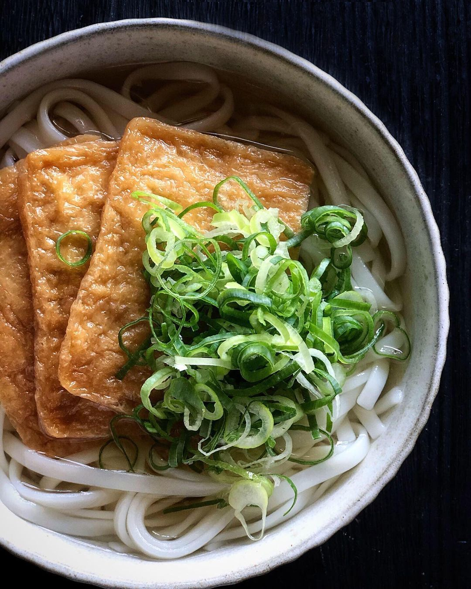

Kitsune Udon Recipe

Ingredients
- Dashi Stock
- 600ml water
- 15g dried bonito flakes
- 1 piece of kombu (Japanese dried kelp)
- 1 tbsp granulated sugar
- 1 tbsp mirin
- 1 tbsp light soya sauce
- ½ tsp salt
- Others
- Udon noodles of your choice
- 4 aburaage (Japanese deep-fried seasoned tofu)
- Narutomaki (Japanese fish cake)
- Sliced green onions
- Shichimi
Preparation Time
- Preparation: 45 - 60 minutes
- Cooking: ~10 minutes
Instructions
- Dashi Stock
- Soak the kombu in water for at least 30 minutes. Transfer the water and softened kombu to a pot and bring to a boil over medium-low heat.
- When it starts to simmer, remove it from heat and take out the kombu. Add dried bonito flakes and bring the mixture to a boil again.
- Once the dashi is boiling again, reduce the heat and let it simmer for 15 seconds. Turn off the heat and let the mixture sit for 10 to 15 minutes, or until the bonito flakes sink to the bottom.
- Strain the dashi stock with a fine-mesh strainer and return it to the pot.
- To make the udon soup, season the dashi stock with mirin, sugar, soya sauce, and salt. Stir to combine and bring to a gentle boil. Turn off the heat, cover, and set aside until ready to use.
- Assembly
- To prepare the toppings, thinly slice green onions. Squeeze out the excess liquid from the aburaage and slice the narutomaki into 0.3cm thick pieces.
- Bring a pot of water to boil and follow the cooking instructions on the package for the store-bought udon noodles.
- Drain the cooked noodles and remove excess water. Transfer the noodles to a bowl, fill with hot soup and top it off with the prepared toppings.
Return to Main Page